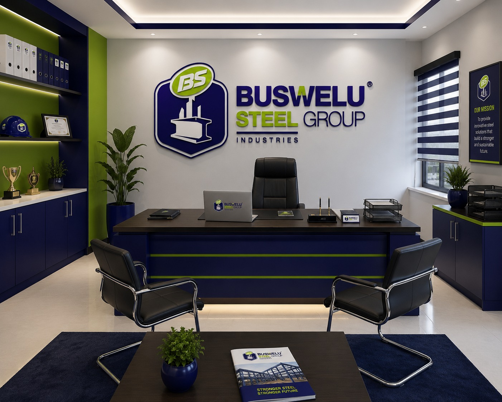

Quality
Precision, consistency, and excellent workmanship in every product we manufacture.
Steel Fabrication Tanzania is the core expertise of Buswelu Steel Group Industries.
We manufacture premium fabricated metal products for residential, commercial,industrial and institutional applications.

Steel Fabrication Tanzania is the foundation of Buswelu Steel Group Industries. We specialize in quality steel products, from gates, grills and door frames to canopies, tanks and custom structures.
Serving residential, commercial, industrial and agricultural projects, we combine skilled craftsmanship with modern fabrication techniques. Bring your ideas, drawings and dimensions. Let’s build something durable together.
Our core pillars define how we operate and guide our commitment
Precision, consistency, and excellent workmanship in every product we manufacture.
Durable products built to withstand demanding use and deliver lasting performance.
Better designs, smarter solutions, and continuous improvement in our fabrication processes.
Reliable service, professional conduct, and lasting relationships with our customers.
Explore the essentials for your next build.
Select a product to view its specifications.
Different industries. Shared ambition.
Explore steel solutions shaped around the way you work.
Steel beams, columns, reinforcement and fabricated roof structures for residential, commercial and infrastructure projects.
Steel sheets, plates, sections and custom components for machinery frames, workshop layouts, storage systems and production equipment.
Fabricated platforms, access walkways, equipment supports and protective structures, specified around site conditions and engineering requirements.
Steel desks, classroom furniture, gates, fencing and roof structures for schools, colleges and learning facilities.
Greenhouse frames, farm sheds, livestock enclosures, storage racks and fabricated equipment supports for agricultural operations.
Custom railings, staircases, furniture frames, canopies and stainless-steel fabrication for hotel, restaurant and leisure spaces.
Shopfront structures, shelving, security grilles, warehouse frames and mezzanine components for retail and business premises.
Gates, perimeter fencing, access structures, furniture frames and storage solutions for offices, healthcare facilities and other institutions.
Every project is unique. Final materials, designs and fabrication requirements are confirmed against your brief and applicable engineering specifications.
A complete project starts with the right approach. Explore the services that turn your steel brief into a workable plan.
Match the steel type, section and finish to your project’s requirements.
Plan precise lengths and dimensions to simplify assembly and reduce offcuts.
Translate drawings into a clear fabrication brief for project-specific components.
Bring quantities, delivery priorities and project stages into one practical plan.
Define your application, dimensions, material preference and required quantity. Our quote brief brings the essentials together.
Confirm the grade, finish, tolerances and fabrication needs with your engineer or supplier before placing an order.
Add your preferred delivery location and timeline so your enquiry reflects the needs of the whole project.
Your next project starts with a conversation.